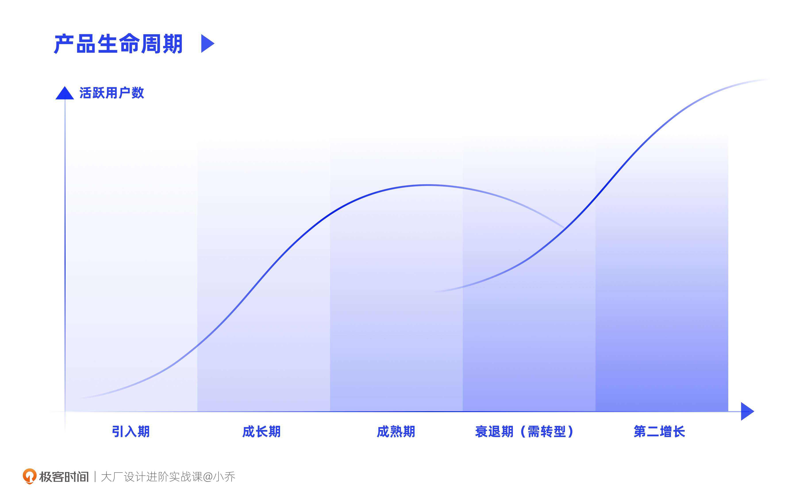

- 00 开篇词 升维思考，是设计师有效成长的第一步.md.html
- 01 业务周期：0-1-10-100-N的发展策略.md.html
- 02 商战模式：如何在商业竞争下突出重围？.md.html
- 03 市场洞察：如何找寻差异化撬动支点？.md.html
- 04 用户洞察：不懂用研的设计师不是好职场人.md.html
- 05 用户画像：是形式主义还是真的有效？.md.html
- 06 用户旅程：挖掘不同用户的核心机会点.md.html
- 07 职场晋升：看懂晋升的“游戏规则”.md.html
- 08 设计价值升级：五层进阶突破成长.md.html
- 09 基础价值 核心三原力：如何将需求转化为设计稿？.md.html
- 10 基础价值 第一性原理：从问题本质解决问题.md.html
- 11 基础价值 设计复盘：只是量化设计结果吗？.md.html
- 12 二级价值 负向网兜：如何全面发现负向问题？.md.html
- 13 二级价值 设计自驱：如何做好项目Owner？.md.html
- 14 二级价值 自驱合作：如何反内卷处理合作关系？.md.html
- 15 三级价值 增长误区：思维惯性陷阱和虚荣数据.md.html
- 16 三级价值 用户增长历程：AARRR是万能的吗？.md.html
- 17 三级价值 产品增长：如何做好产品创新？.md.html
- 18 三级价值 运营增长：如何自驱营销活动和投放？.md.html
- 19 三级价值 品牌增长 抢占心智，赢得人心红利.md.html
- 20 三级价值 增长实操：如何“步步为营”推动落地？.md.html
- 21 四级价值 L型赋能：让T型人才发挥更大价值.md.html
- 22 四级价值 “网状对比”解决共性痛点.md.html
- 23 五级价值 商业画布：设计师可以担任业务方吗？.md.html
- 24 五级价值 共创洞察：如何做好一次完善的workshop？.md.html
- 25 五级价值 领导力觉醒：写给新晋管理者.md.html
- 26 工作选择（上）：2B or 2C设计师？如何规划领域？.md.html
- 27 工作选择（下）：大厂 or 小厂？如何选择赛道？.md.html
- 28 人才地图：认知自我，成为高潜力人才.md.html
- 29 成长历程：如何从设计小白成长为团队负责人？.md.html
- 30 冰山模型：如何成为让面试官欣赏的“面霸”？.md.html
- 31 作品集指导：什么是面试官喜欢的作品集？.md.html
- 用户故事 什么是职场设计师进阶的正确姿势？.md.html
- 结束语 突破自我，成人达己.md.html
- 捐赠
01 业务周期：0-1-10-100-N的发展策略
你好，我是小乔。
从这一章开始，我们就来一起学习商业和用户的洞察分析方法，提升设计策略思维。也许你在工作中，也遇到过以下困惑：
- 为什么我的设计稿做得这么好看，业务方还是指指点点，说我不懂业务呢？
- 我确实不懂业务，每天就是被动接受产品经理安排的需求，信息量很有限，那我该如何突破呢？
- 我想突破，想要自驱推动项目，但业务方说我提的项目，在这个阶段优先级不高。那这个阶段，提什么项目优先级才高呢？
我曾经也遇到过这些困惑，这其实是因为我们所处的工作阶段和每天接收到的有限信息，禁锢了自己的认知。设计师想要得到成长，创造更高的设计价值，就需要从设计技法卓越，升级到设计策略优秀，将“设计师”与“美工”的工作重点区分开。
这节课，我们就先来聊聊业务周期方面的知识，以及我们设计师可以发力的重点。
为什么设计师要了解业务周期呢？
也许有设计同学会问，为什么我们要了解业务周期呢？
在说清这个问题之前，我想先向你介绍邓宁-克鲁格心理效应。在我们还是半瓶子新手时，往往不知道自己不知道，会因为盲目自信，拒绝吸收知识；而当我们内省后发现自己其实并不知道，就会踏上开悟之坡，通过积累知识和经验获得迅速成长；而当我们知道得越多，感受到了山外有山，就会越发谦逊。所以真正的大师，总是儒雅谦和的。
因此，不管你是设计小白，还是工作3、5年的半熟人才，或者已经是一位行业专家了，我都希望我们可以以开放的心态，好好聊聊还没有接触过，或者以为自己已经懂了的“业务周期”。我们的课程也会由浅入深，希望不同工作年限的设计师都能有所收获。
从业务全周期了解每个阶段的发展策略，能够让我们对业务的整体发展有认知上的提升，准确地判断每个阶段的业务方向，了解设计师可以发力的机会点。
具体来说，了解业务周期的意义就在于，我们只有清楚自己所在的业务处于哪个阶段，发展重点是什么，才能和业务方保持在同一个高度对话，共同探讨业务机会点，成功将设计价值前置，而不是被动地坐等需求。
提升业务认知，也有助于我们和有决策权的上层管理者交流，尽量减少他们“向下兼容”的程度，这样我们就会进步更快，也更容易被他人记住和认可。
那么接下来，我们就来分析每个时期的业务重点和设计重点。
业务在不同阶段的发展策略
一个业务从诞生到衰退，称为一个生命周期。完整的产品生命周期，分为引入期、成长期、成熟期和衰退期。当产品处于成熟期和衰退期时，就需要思考新的业务发展方向和产品定位，从而发展第二条增长曲线。因此产品也许并没有进入衰退期，就迎来了第二次成长期。

阶段一：引入期（孵化期）
业务在引入期时，发展的重点在于分析市场定位、探索用户需求、验证核心功能和商业模式，也就是我们经常听到的0-1创业。
业务重点
通常战略部门会主要负责市场定位。比如分析不同国家地区尚未被覆盖的行业，根据行业报告和数据推导市场规模，监控全球范围内迅速增长的黑马产品等等，以此来判断某个国家是否适合为某类人群做某类产品。接下来，再结合用户调研，通过定性、定量的方式，探索和验证用户需求。
在初步明确了业务方向和市场定位后，整个业务需要从产品角度验证核心功能，从品牌和运营角度针对种子用户完成冷启动。比如，完美日记的种子用户是22岁左右刚毕业的年轻女性，经济实力尚且不够雄厚，于是完美日记主打“大牌平替”，通过KOL和KOC在年轻女性喜欢的App上生产大量UGC种草内容，完成冷启动，圈粉无数。
当种子用户在使用核心功能上没有体验问题时，我们可以通过观察留存指标，来判断业务方向是否正确。通常次日留存达到40%、30日留存达到10%左右，基本可以判断业务活下来了；如果留存数据不理想，则需要调整战略方向。但这个数据不是绝对的，要视具体业务形态而定，与竞品对标。
以钉钉为例，钉钉的前身叫作“来往”，在与微信抢占IM市场失败后，重新梳理了市场与用户需求，从2C社交转变为2B社交+办公，成功诞生了钉钉。
设计重点
在了解了引入期的业务重点后，我们设计师可以如何发力呢？
在大部分业务创业初期，团队架构并不完善，比如运营团队尚未搭建，或者产品团队都是经验不够丰富的年轻同学。此时，业务通常会以各职能共创的方式来洞察业务机会点，这就给了我们设计师更多机会。如果不希望自己只是一个塔基建的美工，我们就要对市场和用户更为了解，这样才能主动提出符合业务目标的项目，前置设计价值。
不管是年轻的设计师还是资深的设计师，重点工作都是搭建产品的基础建设，也就是承接需求，做好业务支持，因为这是企业在这个阶段招聘我们的基础目的。除此之外，如果想要获得更好的绩效，就需要有“超出预期”的表现。年轻设计师可以主动优化核心功能的体验，资深设计师可以在共创过程中主动提出业务的差异化增长机会点，并推动项目落地。
以淘宝曾经的美食频道页为例，根据数据可以得知，从频道页进入下一级详情页的转化率很低。通过访谈后发现，在当时的推荐算法下，商品难以击中用户，用户需要更为高效的导购形式。因此，在推荐商品卡片之前，设计了更为细分的导航。从商品品类梳理出牛奶饮料、生鲜水果等分类，也从用户成交转化较好的类型进行分类，梳理出热搜网红味、健康好味道等分类，大大提升了成交转化。
引入期，是最能体现设计师之间能力差异的业务阶段。从脉脉在2022年的人才流动调研中可知，工作10年以上的设计师更愿意去创业公司或者大厂中的创业团队，而不是抖音、淘宝、TikTok中已经处于成熟期的业务。因为在引入期有更大的发挥空间，可以突破职能限制，获得更好的成长和回报。
那么，年轻设计师该如何利用引入期的机会更快成长？资深设计师该如何找寻差异化机会点？具体方法会在我们后续的课程中共同探讨。
阶段二：成长期
在成长期，用户增长成为了最核心的事情。企业会围绕拉新进行产品迭代和运营推广，持续优化商业模式，此时的业务处于1-10蓬勃发展期。
业务重点
在纵向能力上，业务会垂直攻克某一个细分行业或细分用户，形成其他企业难以超越的护城河和企业基因。比如，字节跳动的企业基因就是推荐算法，在研发头条时形成的强大推荐能力，也在后续成就了抖音、西瓜等一个又一个内容型产品。
同时，在横向能力上，在满足核心用户的主要需求后，就会进一步拓展业务，扩充新的用户类型、满足新场景、引入新品类等，这个过程会一直持续到成熟期。在成长期，业务也会通过烧钱做广告投放、运营活动、市场品宣等方式，迅速拉新增长。
设计重点
设计师在业务成长期往往是最忙碌的，由于业务爆增，需求也会跟着应接不暇。此时更需要设计师有合理分配时间的能力，在承接需求以外，从产品、运营、品牌三个维度，推动可以帮助企业深耕行业和拉新增长的项目。
比如淘宝、天猫的第一大品类是女装，在拓展更丰富的商品品类和用户类型之前，淘宝和天猫垂直深耕服饰赛道，推出了多项针对女装的大促活动。后来逐渐打造出“淘宝新势力周”、“天猫新风尚”等等以服饰为主的IP活动，拉动服饰商家的入驻和女装类用户的活跃度。设计师在这些运营活动的IP品牌建设中，发挥了主导作用。
处于成长期的我们，除了支持好业务爆增带来的更多需求外，更需要专注“超出预期”的自驱项目。一步步推动增长项目落地的方法，我们会在之后的课程中具体讲解。
阶段三：成熟期
在成熟期，企业往往会围绕用户活跃和商业化变现，进行产品迭代和运营。同时，也会思考新的爆发点，在走入衰退期之前未雨绸缪。从成熟期开始，业务就进入了10-100的发展。
业务重点
在成熟期，业务顺应成长期的拉新，对横向拓展的新用户类型、新品类、新场景等进行精细化运营，努力将“新客”转化为“老客”，从而提升用户活跃度和商业化变现目标。
为什么要把新客转化为老客呢？在整体的LTV（生命周期总价值）中，老客的用户价值是最高的。通过将新客转化为老客、留住老客、唤醒和召回流失用户等方式，可以帮助业务达成提升用户活跃度和商业化变现的目标。
据调查显示，大部分企业65%以上的销售业绩都来自于老客，一个老客贡献的利润是新客的16倍，争取一个新客的成本是留住一个老客的5倍。也许随着行业的发展，这些数据会有所波动，但不可否认的是，老客在商业化阶段有着显著贡献。
设计重点
在提升用户活跃度方面，我们可以如何留住老客呢？这就需要我们精细化服务好每一类用户的需求，提升使用粘性。成熟期对于我们设计师来说，已经结束了基建工作，也度过了手忙脚乱的迅猛增长期，是时候定下心来好好整顿之前没来得及优化的体验，服务好每个更为细分的“人-货-场”。
以电商行业为例，从成长期至成熟期，企业都会对核心场景、核心人群、核心品类进行重点精细化运营，也就是行业中常说的“人-货-场”。比如淘宝、得物、抖音电商等平台，都有频道页导购矩阵，根据平台特性，主打适合自己的品类、人群和场景。
在商业化方面，我们可以通过设计的方式提升转化漏斗，比如平时打开App时看到的广告弹屏；另一方面，甚至可以根据产品形态提出更为有效的盈利模式，例如平台佣金、会员会费、内容付费等。
此外，在成长期的末期和成熟期的前期，还可以设计一些降本提效的工具。比如像阿里鲁班一样智能合成banner，或使用组件智能化搭建活动页面等，以智能工具替代重复的人力劳动。这样有利于企业释放更多设计及开发资源，使人力投入到更有价值的脑力工作中。
阶段四：衰退期
在衰退期，业务想要扭转局势，持续增长，就需要依赖第二增长曲线，找到转型机会的业务就进入了100-N的再次发展阶段。
业务重点
此时，激烈的商业竞争环境要求企业建立新的核心壁垒，拓展业务类型和生态。
比如，抖音持续发展短视频和直播业务，满足了不同类型的用户来消费内容。但当增长放缓，在业务走向衰退期之前，抖音电商就像一匹黑马，在2021年势如猛虎，服务带货与交易型用户，成功分割了其他国民级电商App的蛋糕。
但找到第二增长曲线并不容易，比如bilibili和AcFun在2017年同时步入衰退期，最终只有B站转型成功，从垂直的二次元文化视频平台转变为内容生态丰富的中国YouTube。在2019年到2020年，B站还通过B站纪录片、B站春晚、后浪、入海、B站科普卫星、行业KOL和主流媒体入驻等动作，成功破局二次元。
设计重点
那我们作为设计师，该如何帮助业务分析机会点，找寻破局的商业方向呢？衰退期的业务需求往往并不多，会出现人比事多的情况，在公司经营不善的情况下也会开启裁员。设计师想要有“超出预期”的表现，就需要帮助业务一起推动转型。
在之后的课程中，我们会讲到用户画像。原本定义的几种核心用户类型，在成长期和成熟期往往已经全面覆盖。此时，要开辟新的业务形态，就需要朝行业上下游扩展新方向，挖掘老用户的新需求和新用户的新需求。
比如，上文提到的抖音电商，满足了内容型用户的交易需求，也就是老用户的新需求；同时，电商行业也有更多新用户类型可以扩展，也就是新用户的新需求。
简单来说和前面几个阶段一样，都是通过市场洞察、用户需求分析，来判断商业信号，也就是我们本章节的装备库。迎来第二增长曲线的关键，在于有没有找准市场上稍纵即逝的供需不平衡，同时又满足天时地利人和。
到此为止，我们探讨了一个产品分别在引入期、成长期、成熟期、衰退期的不同发展重点。在业务的每个阶段，都有我们设计师可以发挥价值的机会点和项目。只要是需要投入设计的项目，我们都可以主动规划和推动项目落地，而不是等待其他职能的同学将业务规划完毕后再找我们画图。只有这样，设计师才能真正地成长，成为那个为业务带来更大价值的核心人才。
如何判断业务处于哪个阶段？
既然在每个阶段我们都可以找到抓手去发挥价值，那么现在的重点问题就变成了——如何判断业务处于哪个阶段？因为判断好阶段，才是我们有效实施策略的第一步。
通常在创业团队中，我们都比较清楚业务所处的阶段。但在引入期过后，随着企业或部门的壮大，尤其在一些大厂，团队架构庞大复杂，职能划分细碎，设计师接收到的信息较少，许多同学会不清楚业务所处的阶段。我们可以通过一些数据平台，通过查看活跃用户数的曲线趋势来判断。
为什么是看活跃用户数，而不是下载量或注册量呢？因为用户下载了不一定使用，可能早已流失了，这些数据指标无法代表目前产品的活力，会形成“虚荣数据”。但活跃用户数，可以有效反应每个时间点的产品生命力。
如下图所示，通常引入期成长缓慢，而成长期呈现加速上涨趋势，成熟期增长趋于平缓，衰退期曲线会呈现下降趋势。
接下来，我们一起做个小练习。我从data.ai搜索了得物、淘宝、TikTok、快手的活跃用户曲线图，你能根据下图判断各产品目前处于哪个发展阶段嘛？
图1，得物从2021年末进入了成熟期，在这之前处于爆发增长的成长期；
图2，淘宝是2003年5月成立的，由于data.ai无法查阅2014年1月5日之前的数据，所以我们只能看到后半段的曲线，但也同样可以判断出，淘宝已经处于衰退期；
图3，TikTok我查阅的是美国的用户数据，我们可以看出涨势较好，此外，TikTok还同时在多个国家地区生根发芽，正处于蓬勃发展的成长期；
图4，快手经历了上涨和下跌，目前已经处于衰退期，但衰退状态较为平稳，也许正在布局第二增长曲线。
我团队曾经有位同学，在业务还处于引入期时就很想做效率工具设计，但其实这并不是业务的重点，所以她想推动的项目对于各职能来说优先级都不高。因此我们只有了解目前业务所处的阶段，清晰每个阶段设计可以发力的重点，才能更好地帮助业务增长，也给自己带来更大的成长与回报。
对于只想被动承接日常需求的设计师来说，也许不具备业务的全局观，也可以度过每一天，但是职场竞争力会随着行业的紧缩日渐下降，甚至有被汰换的风险。如果想要“超出预期”，获得更高的成长与回报，业务全局观是十分必要的。
今日小结
恭喜你，已经完成了第一节课的学习，让我们一起来回顾一下。
首先，业务的发展周期分为引入期、成长期、成熟期和衰退期，在每个发展阶段，都有不同的策略重点。而我们设计师，可以根据不同阶段的业务重点，自驱适合设计发力的项目。下图分别是业务和设计在每个周期阶段的重点总结，如果你需要的话，可以保存。
如果我们为工作感到迷茫，通常是因为自我能力无法与自我期待相匹配。当我们一起学完这套课程后，相信你的能力也会更符合你对自己的期待，课程开头的问题也将不再是问题了。
互动时刻
思考你目前负责的业务，正处于什么发展阶段，业务重点是什么？你想好可以发力的项目了吗？
欢迎把你的经历和思考在留言区分享出来，与我和其他同学一起探讨。我们建立了一个读者交流群，欢迎你的加入！如果你觉得有所收获，也欢迎把文章分享给你的朋友一起学习。我们下节课见。
© 2019 - 2023 Liangliang Lee. Powered by gin and hexo-theme-book.